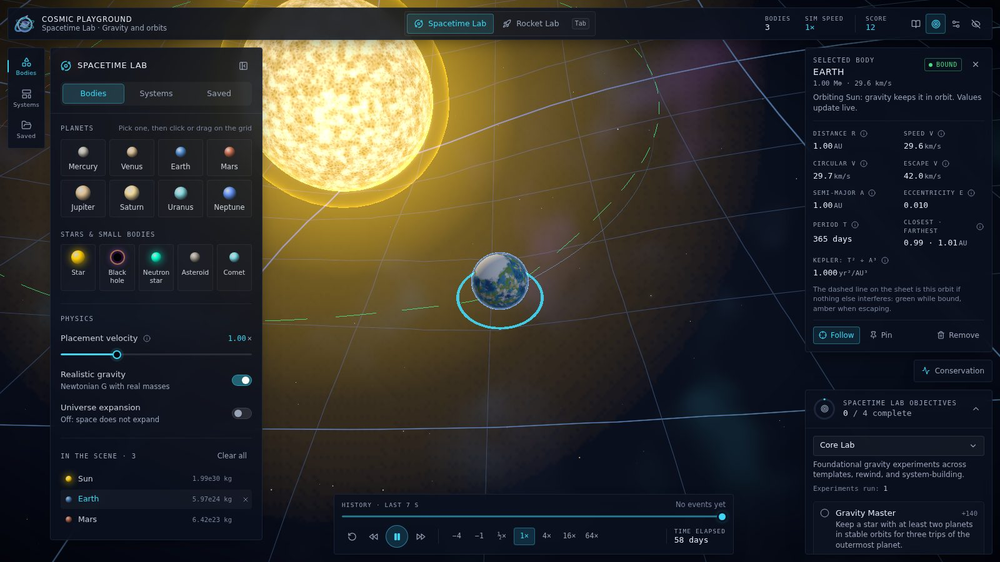
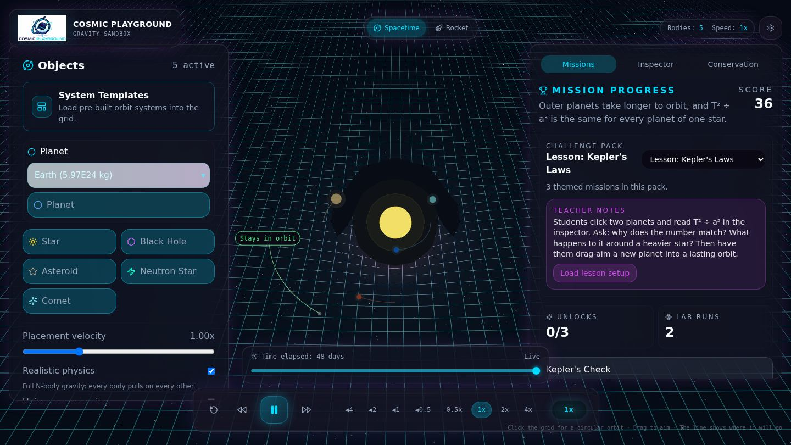
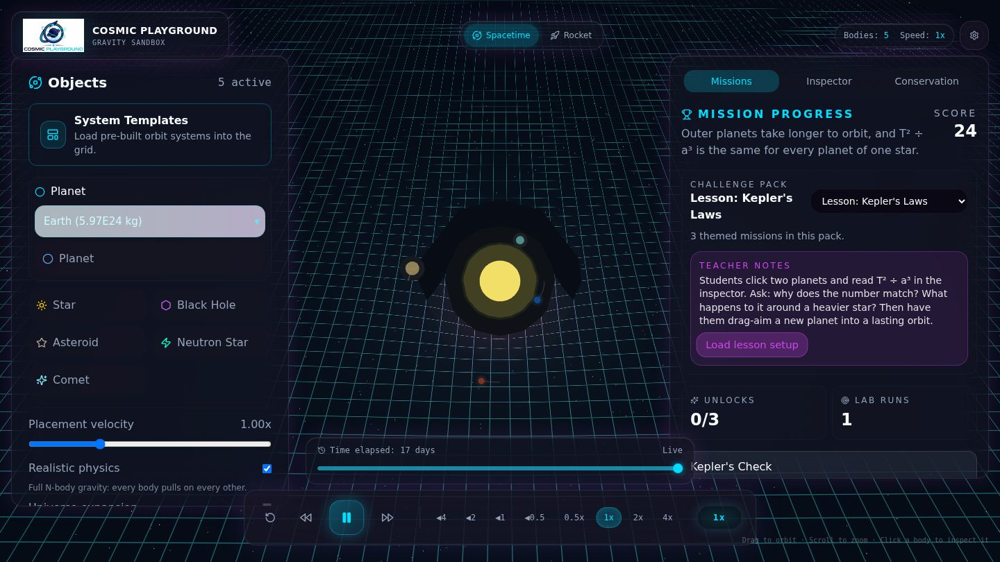
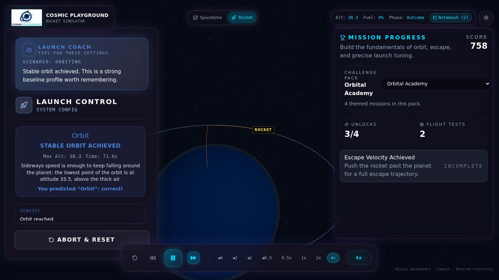
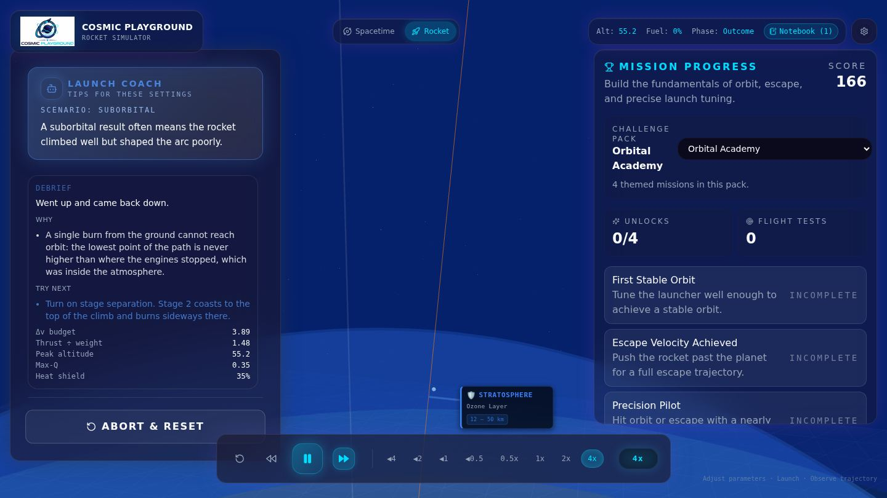
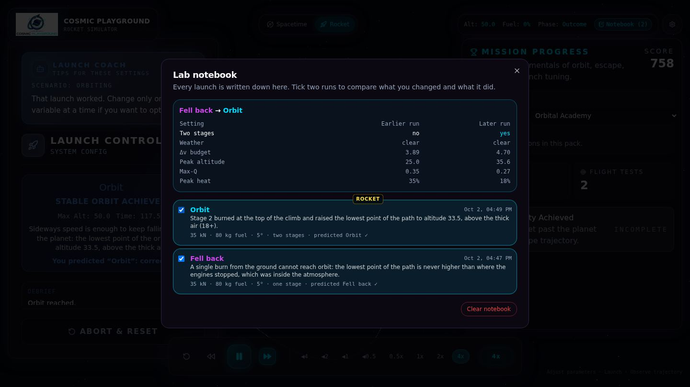

Textbooks show physics as finished answers. In Cosmic Playground you make a prediction, run the experiment, watch it succeed or fail, and work out why. Two labs: a Spacetime Lab for gravity and orbits, and a Rocket Lab for launching to orbit through real weather.
Runs in any modern browser. Nothing to install for students.
Every body pulls on every other body, just as in the real Solar System. Masses are real (the Sun is 1.989 × 10³⁰ kg), one astronomical unit (AU) is 8 grid squares, and one year is the time an orbit at 1 AU takes. The grid bends under each mass so you can see the gravity well.

The placement velocity slider scales the orbital speed: below 1 the body falls inwards, above about 1.41 it escapes. Try it and check the preview.
| Event | When |
|---|---|
| Merge | A slow collision: the bodies join, keeping their total momentum. |
| Bounce | Faster than the pair's escape speed: they rebound and lose energy as heat. |
| Shatter | Much faster: the smaller body breaks into fragments. |
| Swallowed | Anything crossing a black hole's event horizon. |
| Torn apart | A body that strays inside a black hole's Roche limit is stretched into a stream. |
Each impact opens a short explanation with the momentum kept and the energy released, and leaves a marker on the history bar.

Click any body (in the scene or under In the scene on the left). The inspector shows what it orbits, its distance, its speed and how long one lap takes. More detail adds the size and shape of the orbit, its closest and farthest points, and T² ÷ a³. For every planet of the same star that number comes out the same: Kepler's third law. A dashed line in the scene shows the orbit it is following.
Pin holds a body still while it keeps pulling on the others; Follow keeps the camera on it.
The time controls at the bottom pause and play (Space) and run from −4× (rewind) to 64×. At 64× a year passes in under a second, with exactly the same result as at 1×. Drag the history bar to scrub back through the last 30 seconds; impact markers show when things happened, and absorbed bodies come back.
The Energy button in the tool rail on the left plots energy, momentum and angular momentum. They stay flat while only gravity acts, and jump at a collision, where energy turns into heat.
Arcade gravity (switch off Realistic gravity) is 4× stronger with a speed cap: same shapes, faster play.
Launch a rocket from a small planet and try to reach orbit. The flight follows real physics: gravity weakens with height, the air thins with altitude, drag depends on speed through the air (and the wind), and fuel burns away, making the rocket lighter. This is the rocket equation at work.

A rocket that burns all its fuel near the ground comes back down: the lowest point of its path can never be higher than where the engine stopped. Turn on stage separation. Stage 1 drops away when it is empty; stage 2 coasts to the top of the climb and burns sideways there, lifting the lowest point of the path above the air.
Orbit, escape, falls back, crash or burn-up, judged from the rocket's energy and the lowest point of its path. The verdict comes as soon as the outcome is certain, often before the top of the climb. Watch Max-Q (the hardest push of the air on the rocket) and the heat shield. The flight status panel on the right says what the rocket is doing; Show details adds heating and air pressure. Turn on Show forces on the rocket to see thrust, gravity, drag and wind as arrows.


Objectives are checked against what really happens in the simulation, not just what you click. For example, Gravity Master needs planets that stay in orbit for three laps of the outermost one, and Slingshot Expert needs a flyby that really raises a comet's speed by 30%. There are 20 objectives in 11 courses. Pick a course in the Objectives panel (the chip on the right, or L); the Mission log (M) lists them all. Points unlock a Gravity Slingshot system (500) and a Mars dust-storm ascent (750).
Each teacher pack is one lesson: notes with questions to ask, three objectives, and a Load lesson setup button that puts the right system or rocket on every screen. Choose the pack in the course menu of the Objectives panel (the chip on the right, or L).
| Lesson | Lab | Big idea |
|---|---|---|
| Kepler's Laws | Spacetime | Farther planets are slower; T² ÷ a³ is the same for every planet of one star. |
| Gravity Assists | Spacetime | A moving body can lend speed to a small one that swings past it. |
| Black Holes and Tides | Spacetime | Orbits around a black hole obey the same rules, until tides tear a body apart. |
| The Rocket Equation | Rocket | Fuel is heavy: doubling it does not double the speed; dropping empty tanks helps. |
| Weather and Launch Safety | Rocket | Wind, heat and thick air decide whether a launch is safe. |
Help and settings (top right, or ?) holds graphics quality (use Low on older laptops and Chromebooks), motion (follows the device setting, or choose Reduced or Full) and high contrast.
| Key | Action |
|---|---|
| Space | Pause or play |
| ← → | Slower or faster; left of 0 rewinds |
| R | Reset the current lab |
| Esc | Stop placing a body, close the inspector or a dialog |
| 1 2 / Tab | Spacetime Lab / Rocket Lab. Tab switches labs only when no control is focused, so it still moves between controls. |
| L M H | Objectives, mission log, hide the interface |
| Drag / scroll | Turn the camera / zoom |